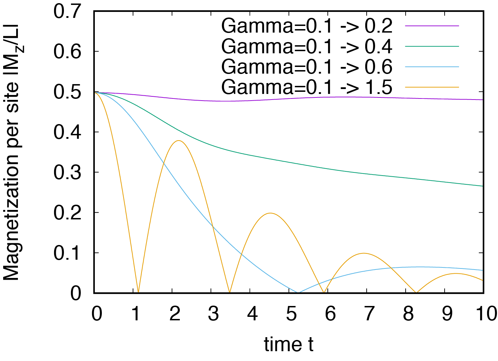

3.2. Dynamical phase transition in 1D transverse-field Ising model¶
Dynamical phase transition (DPT) is a phase transition due to nonequilibrium process such as sudden quench. In this section, we introduce the DPT in 1D transverse Ising model, which is one of the famous examples for the DPT. The details are found in this paper (M. Heyl, A. Polkovnikov, and S. Kehrein, Phys. Rev. Lett. 110, 135704 (2013)).
3.2.1. Ground state¶
First, you need to obtain the initial state for simulations of the real-time dynamics.
Please make the following input file (samples/tutorial_3.2/stan1.in)
model = "SpinGC"
method = "CG"
lattice = "chain"
L = 12
Jz = -1.0
Gamma = 0.1
h = 1e-5
EigenvecIO = "out"
and run the following command
HPhi -s stan1.in
Check the total magnetization along \(z\)-direction \(M_z = \sum_i \langle S^z_i \rangle\) in “output/zvo_energy.dat”.
Question: If a longitudinal magnetic field \(h\) in stan1.in becomes 0, what happens?
3.2.2. \(\Gamma\) quench¶
After obtaining the ground state, you can perform simulations for \(\Gamma\) quench in the 1D transverse-field Ising model.
Make the following input file (samples/tutorial_3.1/stan2.in)
model = "SpinGC"
method = "Time-Evolution"
lattice = "chain"
L = 12
Jz = -1.0
Gamma = 0.2
h = 1e-5
EigenvecIO = "in"
dt = 0.01
lanczos_max = 1000
In this case, \(\Gamma\) quench from 0.1 to 0.2 will be performed by executing the following command
HPhi -s stan2.in
Now you can check the real-time evolution of \(M_z\) in “output/Flct.dat”. The result is plotted by executing the following command on gnuplot
gnuplot
gnuplot> set xlabel "time t"
gnuplot> set ylabel "Magnetization per site |M_z/L|"
gnuplot> p "output/Flct.dat" u 1:(abs($6/12)) w l tit "Gamma=0.1 -> 0.2"
One of the features of DPT in this model is that cusp structures in the dynamics of \(M_z\) appears at the same intervals. The following figure is an example for several results for \(\Gamma\) quench. You can see the cusp structure for \(\Gamma > 0.5\).
{kind=link}